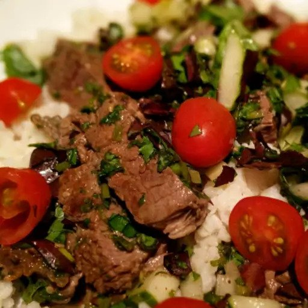

Thai Beef Salad

Description:
Thai Beef Salad is a flavorful and vibrant dish that
combines juicy steak with an assortment of fresh ingredients
and a tangy dressing.
The recipe begins by marinating the steak
in a mixture of lime juice, fresh cilantro, mint leaves, sugar, fish
sauce, green onions, lemongrass, and sweet chili sauce. This marinade
infuses the meat with a burst of aromatic and tangy flavors. The steak is
then grilled to perfection, resulting in tender and flavorful slices. The
salad base consists of leaf lettuce, providing a crisp and refreshing backdrop.
Tossed in with the lettuce are diced English cucumber and halved cherry tomatoes,
which add a cool and juicy element. The salad is dressed with the remaining marinade,
creating a zesty and savory dressing that ties all the flavors together.
Garnished with additional fresh cilantro, this Thai Beef Salad is a harmonious blend of
sweet, tangy, and herbal flavors. It is a satisfying and vibrant dish that is perfect
for a light lunch or dinner option with a delightful Thai twist.
Ingredients:
- 1 cup of lime juice
- 1 cup of chopped fresh cilantro, plus more for garnish
- 1 cup of chopped fresh mint leaves
- 1/2 cup of white sugar
- 1/3 cup of fish sauce
- 2 green onions, chopped
- 1 stalk of lemongrass, smashed and cut into 1-inch pieces
- 1 tablespoon of sweet chili sauce
- 1 1/2 pounds of (1-inch thick) steak fillet
- 1 head of leaf lettuce - rinsed, dried, and torn into bite-size pieces
- 1/2 English cucumber, diced
- 1 pint of cherry tomatoes, halved
Steps:
- Mix lime juice, cilantro, mint leaves, sugar, fish sauce, green onions,
lemongrass, and chili sauce together in a large bowl until sugar is dissolved.
Adjust the flavor, if desired, by adding more sugar and/or fish sauce; set aside.
- Preheat an outdoor grill for high heat and lightly oil the grate
- Cook steak on the preheated grill until it begins to firm and is hot
and slightly pink in the center, about 4 to 6 minutes per side. An instant-read thermometer
inserted into the center should read 140 degrees Fahrenheit (60 degrees Celcius).
- Transfer steak to a chopping board and slice into thin strips; add steak and its juices
into the bowl with herb mixture. Cover and refrigerate for at least 3 hours.
- Place lettuce in a salad bowl; arrange cucumber on top. Add steak and pour all of the herb
mixture on top. Scatter cherry tomatoes over salad and garnish with fresh cilantro leaves.